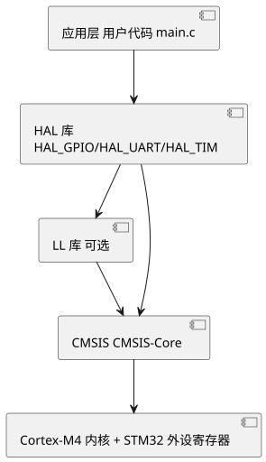

第 15 章 STM32 HAL 库与工程结构
学习目标
- 理解 HAL 库的设计思想与目录组织
- 掌握 CubeMX 生成工程的主要文件作用（main.c / stm32f4xx_it.c / stm32f4xx_hal_conf.h / startup）
- 理解外设句柄（Handle）的概念与初始化流程
- 掌握 USER CODE BEGIN/END 标记的位置与作用，避免 CubeMX 重新生成时丢失代码
- 能够实现 printf 重定向到串口
- 理解 HAL 库的 __weak 回调机制
15.1 HAL 库设计思想与目录结构
HAL（Hardware Abstraction Layer，硬件抽象层）库是 ST 为统一 STM32 全系列外设访问接口而设计的中间层。其设计思想可概括为三点：统一 API（同一外设函数名跨系列一致，便于代码移植）、句柄化（每个外设实例由一个句柄结构体管理）、回调机制（中断/事件通过弱函数回调，用户在 USER CODE 区重写）。
CubeMX 生成工程的 Drivers 目录组织如下：
Drivers/
├── CMSIS/
│ ├── Device/ST/STM32F4xx/Include/ # stm32f4xx.h, system_stm32f4xx.h
│ ├── Device/ST/STM32F4xx/Source/ # system_stm32f4xx.c, startup_stm32f407xx.s
│ └── Include/ # core_cm4.h, cmsis_compiler.h
└── STM32F4xx_HAL_Driver/
├── Inc/ # stm32f4xx_hal.h, stm32f4xx_hal_gpio.h ...
└── Src/ # stm32f4xx_hal_gpio.c, stm32f4xx_hal_uart.c ...
CMSIS（Cortex Microcontroller Software Interface Standard）是 ARM 制定的内核抽象层，提供内核寄存器、NVIC、SysTick 等访问接口，所有 Cortex-M 芯片共用；HAL 是 ST 在 CMSIS 之上的外设抽象层，二者层次分明。

查看 PlantUML 源码
@startuml
skinparam defaultFontName "Microsoft YaHei"
skinparam backgroundColor #ffffff
top to bottom direction
component "应用层 用户代码 main.c" as A
component "HAL 库\nHAL_GPIO/HAL_UART/HAL_TIM" as B
component "LL 库 可选" as C
component "CMSIS CMSIS-Core" as D
component "Cortex-M4 内核 + STM32 外设寄存器" as E
A --> B
B --> C
B --> D
C --> D
D --> E
@enduml15.2 CubeMX 生成工程文件分析
CubeMX 生成的 STM32CubeIDE 工程主要文件如下：
| 文件 | 作用 |
|---|---|
| Core/Src/main.c | 主程序，包含 main()、初始化函数、主循环 |
| Core/Src/stm32f4xx_it.c | 中断服务函数 ISR 集中放置 |
| Core/Src/stm32f4xx_hal_msp.c | MSP（MCU Support Package）外设底层初始化：GPIO/时钟/NVIC |
| Core/Inc/main.h | 用户头文件，引脚宏定义 |
| Core/Inc/stm32f4xx_hal_conf.h | HAL 配置：模块使能宏、HSE/HSI 值、SysTick 优先级 |
| Core/Inc/stm32f4xx_it.h | 中断函数声明 |
| startup_stm32f407xx.s | 启动文件：栈/堆配置、中断向量表、Reset_Handler |
| system_stm32f4xx.c | 系统时钟配置 SystemInit()、SystemCoreClock 变量 |
| STM32F407VETx_FLASH.ld | 链接脚本（GCC 工程使用） |
| 工程名.ioc | CubeMX 配置文件，重新打开 CubeMX 修改 |
main.c 的关键结构：包含 int main(void) 主函数，依次调用 HAL_Init()（HAL 库初始化、SysTick 启动）、SystemClock_Config()（PLL 配置系统时钟到 168 MHz）、MX_GPIO_Init()、MX_USART1_UART_Init() 等外设初始化函数，最后进入 while(1) 主循环。
15.3 外设初始化流程与句柄概念
HAL 库为每个外设实例定义一个句柄（Handle）结构体，统一管理外设寄存器基地址、配置参数、状态、DMA 指针、回调函数等。以 USART1 为例：
UART_HandleTypeDef huart1; /* 全局句柄 */
void MX_USART1_UART_Init(void)
{
huart1.Instance = USART1; /* 寄存器基地址 */
huart1.Init.BaudRate = 115200; /* 波特率 */
huart1.Init.WordLength = UART_WORDLENGTH_8B; /* 8 数据位 */
huart1.Init.StopBits = UART_STOPBITS_1; /* 1 停止位 */
huart1.Init.Parity = UART_PARITY_NONE; /* 无校验 */
huart1.Init.Mode = UART_MODE_TX_RX; /* 收发 */
huart1.Init.HwFlowCtl = UART_HWCONTROL_NONE; /* 无硬件流控 */
huart1.Init.OverSampling = UART_OVERSAMPLING_16;
if (HAL_UART_Init(&huart1) != HAL_OK) { /* 写入寄存器 */
Error_Handler();
}
}
HAL_UART_Init 内部会调用 HAL_UART_MspInit（在 stm32f4xx_hal_msp.c 中由 CubeMX 生成），后者负责开启 USART1 时钟、配置 PA9/PA10 复用、配置 NVIC。这种"参数 + 底层"分离的设计让外设初始化逻辑与引脚/时钟底层解耦，便于跨板级移植。
句柄结构体的核心字段包括：
Instance：指向外设寄存器基地址（如 USART1TypeDef*）Init：初始化参数结构体gState / RxState：当前发送/接收状态机pTxBuffPtr / TxXferCount：发送缓冲指针与剩余字节数ErrorCode：错误码（ORE/FE/NE/PE）*hdmatx / *hdmarx：关联的 DMA 句柄
15.4 用户代码添加位置
CubeMX 在所有生成的源文件中预置了 /* USER CODE BEGIN xxx */ 与 /* USER CODE END xxx */ 标记对。这些标记之间的代码会被 CubeMX 保留，重新生成工程时不被覆盖；标记外的修改会丢失。常用标记位置：
| 标记名 | 位置 | 典型用途 |
|---|---|---|
| USER CODE BEGIN Includes | main.c 头部 | 包含 stdio.h、string.h 等用户头文件 |
| USER CODE BEGIN PV | main.c 全局变量区 | 用户全局变量 |
| USER CODE BEGIN 0 | main.c 函数区开头 | 用户自定义函数实现 |
| USER CODE BEGIN 2 | main() 初始化之后 | 开机一次性逻辑 |
| USER CODE BEGIN WHILE / 3 | 主循环内 | 主循环逻辑 |
| USER CODE BEGIN 4 | main.c 末尾 | 用户自定义函数实现 |
| USER CODE BEGIN EXTI9_5_IRQn | stm32f4xx_it.c | ISR 内自定义逻辑（也可用回调） |
15.5 printf 重定向到串口
嵌入式开发中，printf 是最常用的调试输出手段。GCC/Keil 的标准库 printf 最终调用 fputc，只需重定向该函数到 USART 即可让 printf 输出到串口。CubeIDE 工程需勾选 Toolchain → Use float with printf from newlib-nano，并在 syscalls.c 或 main.c 中实现 fputc。
/* USER CODE BEGIN 0 */
#include <stdio.h>
#ifdef __GNUC__
#define PUTCHAR_PROTOTYPE int __io_putchar(int ch)
#else
#define PUTCHAR_PROTOTYPE int fputc(int ch, FILE *f)
#endif
PUTCHAR_PROTOTYPE
{
HAL_UART_Transmit(&huart1, (uint8_t *)&ch, 1, 0xFFFF);
return ch;
}
/* USER CODE END 0 */
/* USER CODE BEGIN 2 */
printf("STM32F407 系统启动, HCLK=%lu Hz\r\n", SystemCoreClock);
/* USER CODE END 2 */
Keil MDK 中还需在工程选项 Target → Use MicroLIB 勾选，否则可能因半主机模式（Semihosting）导致程序卡死。printf 默认带缓冲，调试时可改用 fprintf(stderr, ...) 或实现 _write 系统调用确保立即输出。
15.6 HAL 库常见宏与回调机制
HAL 库大量使用宏简化外设访问，常用宏包括：
__HAL_UART_ENABLE_IT(__HANDLE__, __INTERRUPT__)：使能 UART 中断__HAL_UART_GET_FLAG(__HANDLE__, __FLAG__)：读取状态标志__HAL_UART_CLEAR_FLAG(__HANDLE__, __FLAG__)：清除标志__HAL_TIM_SET_AUTORELOAD(__HANDLE__, __VALUE__)：运行时修改 ARRSET_BIT / CLEAR_BIT / MODIFY_REG：寄存器位操作
HAL 库的回调机制是理解中断处理的关键。HAL 在 ISR 中完成寄存器清理等通用工作后，调用一个 __weak 修饰的回调函数；用户在 USER CODE 区重写同名函数（去掉 __weak）即可，无需修改库文件。以 GPIO 外部中断为例：
/* stm32f4xx_it.c 中 CubeMX 生成的 ISR */
void EXTI9_5_IRQHandler(void)
{
HAL_GPIO_EXTI_IRQHandler(GPIO_PIN_8); /* 清标志 + 调回调 */
}
/* HAL 库内部弱定义（用户无需关心） */
__weak void HAL_GPIO_EXTI_Callback(uint16_t GPIO_Pin)
{
UNUSED(GPIO_Pin);
}
/* main.c 中 USER CODE 区用户重写 */
void HAL_GPIO_EXTI_Callback(uint16_t GPIO_Pin)
{
if (GPIO_Pin == GPIO_PIN_8) {
HAL_GPIO_TogglePin(GPIOA, GPIO_PIN_6); /* 按键翻转 LED */
}
}
常见 HAL 回调函数对照：
| 外设 | 回调函数 | 触发时机 |
|---|---|---|
| UART | HAL_UART_RxCpltCallback | 接收完成 |
| UART | HAL_UART_TxCpltCallback | 发送完成 |
| UART | HAL_UARTEx_RxEventCallback | IDLE/指定长度事件 |
| TIM | HAL_TIM_PeriodElapsedCallback | 更新中断 |
| TIM | HAL_TIM_IC_CaptureCallback | 输入捕获 |
| ADC | HAL_ADC_ConvCpltCallback | 转换完成 |
| GPIO | HAL_GPIO_EXTI_Callback | 外部中断 |
本章小结
- HAL 库以"统一 API、句柄化、回调机制"为核心设计思想，配合 CMSIS 共同构成 STM32 软件栈。
- CubeMX 工程由 main.c、stm32f4xx_it.c、stm32f4xx_hal_msp.c、hal_conf.h、startup.s、system_stm32f4xx.c 等组成，分工清晰。
- 每个外设由一个句柄结构体管理，HAL_xxx_Init 完成参数写入，HAL_xxx_MspInit 完成底层时钟/引脚/NVIC 配置。
- 用户代码必须写在 USER CODE BEGIN/END 标记对之间，避免 CubeMX 重新生成时丢失。
- 重定向 fputc/__io_putchar 即可让 printf 输出到 USART，是嵌入式调试的基本技巧。
- HAL 中断处理采用 __weak 回调，用户在 USER CODE 区重写回调函数即可处理事件。
思考题与习题
- 简述 HAL 库的三条核心设计思想，并说明它们带来的好处。
- CubeMX 工程中 stm32f4xx_hal_msp.c 与 main.c 中的 MX_GPIO_Init 各自完成什么工作？为什么要分开？
- 什么是外设句柄？以 UART_HandleTypeDef 为例，列出至少 5 个关键字段及其含义。
- 为什么用户代码必须写在 USER CODE BEGIN/END 之间？如果不小心把代码写在标记外，会发生什么？
- 实现 printf 重定向到 USART1，写出关键代码，并说明 Keil 与 CubeIDE 的差异。
- 说明 __weak 修饰符在 HAL 回调机制中的作用，并写出 GPIO 外部中断的完整回调流程。
参考文献
- ST 官方. STM32F4xx HAL User Manual UM1025 [Z]. 2024. https://www.st.com/
- ST 官方. STM32CubeMX 用户手册 UM1718 [Z]. 2024. https://www.st.com/
- ARM 官方. CMSIS Documentation [Z]. 2024. https://arm-software.github.io/CMSIS_5/
- 廖义奎. STM32 嵌入式系统开发实战指南——基于 HAL 库 [M]. 北京：机械工业出版社, 2021.
- 野火嵌入式. STM32 HAL 库开发实战指南 [M]. 北京：电子工业出版社, 2020.